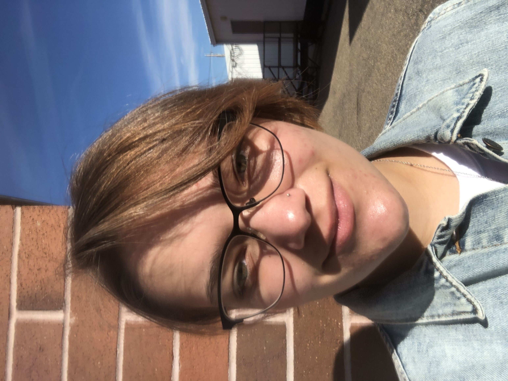

|  | Elia RansomExploring Computer Science 1: Learning the basics of Computer Science, HTML, and CSS: Sunset Jr. HighArt Conservator: Preserve pieces of art and historical artifacts for museumsArt Conservator |
School
I have been in the school orchestra since the 7th grade, and I started playing the violin in the 6th grade. This year is the first year I’ve joined any clubs, I am in Mock Trial. I take as many art classes as possible because those are my favorite and they’re a nice break from my other classes. I started taking an AP class this year because I would like to graduate High School with an associate degree to save time.
Personal
I started fencing this year, I am still learning many new things about it and there is a lot of room for improvement. I go to a fencing club twice a week and I have been enjoying it. It’s a great experience and teaches a lot of great lessons. I love art and enjoy it in my free time. I also give violin lessons and take violin lessons, and I have two planters with herbs in my backyard that I take care of.
Syracuse Elementery:2013-2014: Bees
Clinton Elementery:2014-2018: Cougars
Sunsent Jr. High:2018-2020: Sundevils